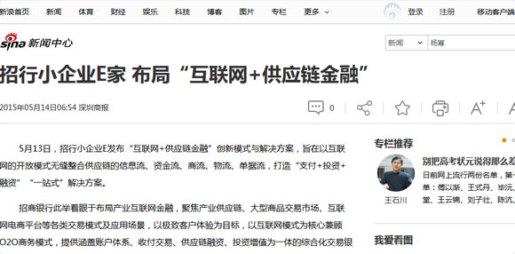

媒体报道
新浪新闻-招行小企业E家 布局“互联网+供应链金融”

5月13日，招行小企业E发布“互联网+供应链金融”创新模式与解决方案，旨在以互联网的开放模式无缝整合供应链的信息流、资金流、商流、物流、单据流，打造“支付+投资+融资”“一站式”解决方案。
招商银行此举着眼于布局产业互联网金融，聚焦产业供应链、大型商品交易市场、互联网电商平台等各类交易模式及应用场景，以极致客户体验为目标，以互联网模式为核心兼顾O2O商务模式，提供涵盖账户体系、收付交易、供应链融资、投资增值为一体的综合化交易银行服务方案——“E+账户”。
这是招商银行应用互联网思维和技术，立足“支付、应用场景、交易渠道”三个关键点，重塑传统银行“存贷汇”功能，打造公司金融新优势的亮剑之举。（张 怡）
（原标题：招行小企业E家 布局“互联网+供应链金融”）
5月13日，招行小企业E发布“互联网+供应链金融”创新模式与解决方案，旨在以互联网的开放模式无缝整合供应链的信息流、资金流、商流、物流、单据流，打造“支付+投资+融资”“一站式”解决方案。
招商银行此举着眼于布局产业互联网金融，聚焦产业供应链、大型商品交易市场、互联网电商平台等各类交易模式及应用场景，以极致客户体验为目标，以互联网模式为核心兼顾O2O商务模式，提供涵盖账户体系、收付交易、供应链融资、投资增值为一体的综合化交易银行服务方案——“E+账户”。
这是招商银行应用互联网思维和技术，立足“支付、应用场景、交易渠道”三个关键点，重塑传统银行“存贷汇”功能，打造公司金融新优势的亮剑之举。（张 怡）
（原标题：招行小企业E家 布局“互联网+供应链金融”）